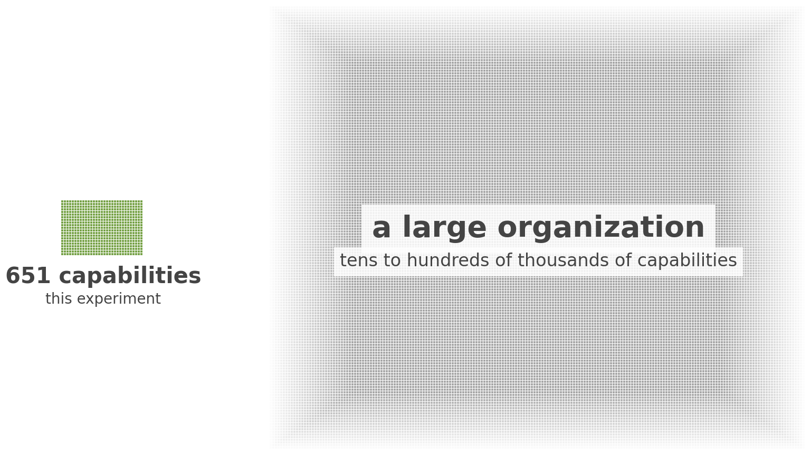
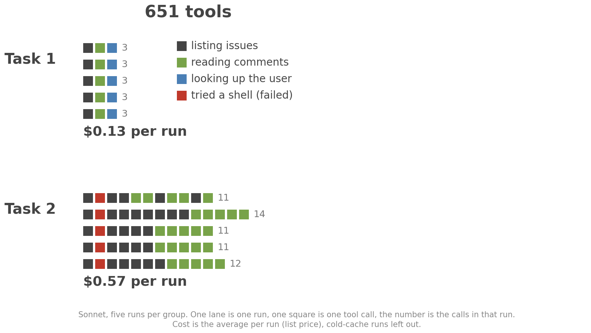
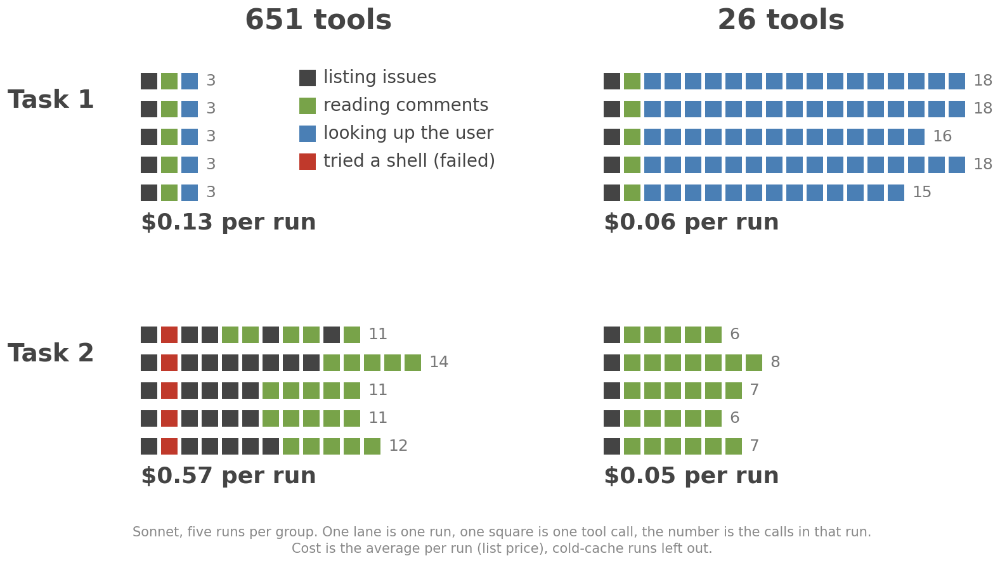
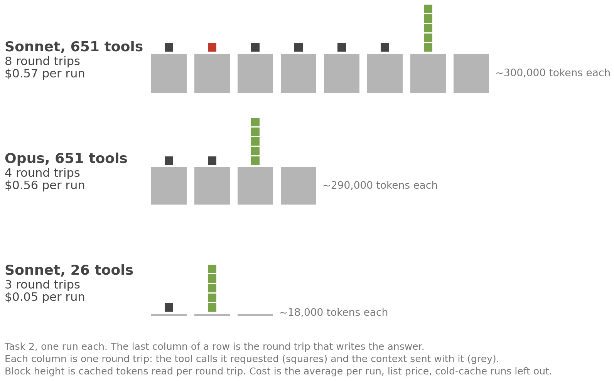
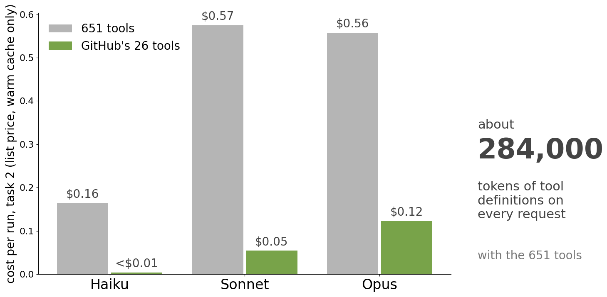

A Small Experiment
(18) Data and Code Are on GitHub
[https://github.com/dret/sag-2026-ai-integration]
(19) 651 Capabilities Is Tiny Compared to a Real Organization

(20) Two Tasks
Task 1: Find the first issue ever opened in cli/cli, not counting pull requests. Who
wrote the first comment on it, and when was that person's GitHub account created?
Task 2: Take the first five issues ever opened in cli/cli, not counting pull requests.
For each, count the comments from before 2020 that were written by someone other than
the author of the issue. Which issue has the most, and how many?
(21) Harder Tasks Are Harder to Solve

(23) Better Fitting Tools Reduce Cost

(24) Every Round Trip Sends the Whole Context

(25) 651 Tools Cost 4 to 40 Times More

(26) API Returns User Creation Date
# GitHub OpenAPI description (excerpt)
paths:
/users/{username}:
get:
operationId: users/get-by-username
summary: Get a user
responses:
"200":
content:
application/json:
schema:
oneOf:
- $ref: "#/components/schemas/private-user"
- $ref: "#/components/schemas/public-user"
components:
schemas:
public-user:
required: [login, id, ..., created_at, ...]
properties:
created_at:
type: string
format: date-time
(30) Repeated Calls in the Trace Point to a Missing Tool